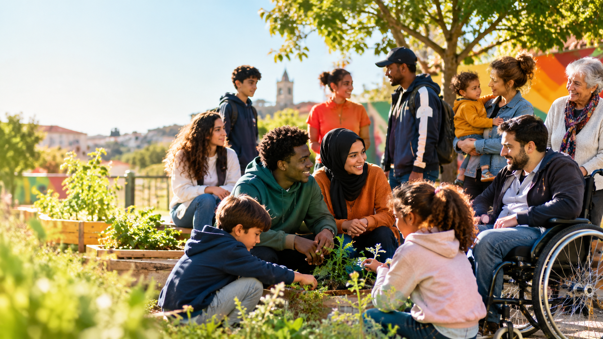
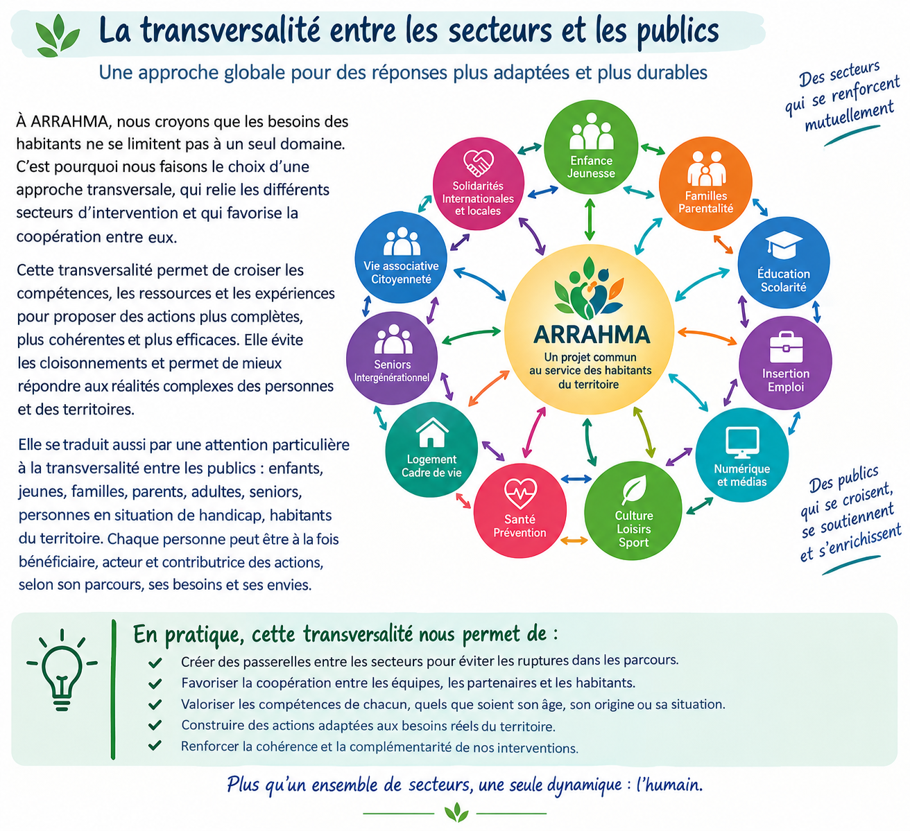

Dignité
Reconnaître chaque personne dans sa singularité, respecter son histoire, ses choix, ses capacités et son rythme. L’accueil commence par le respect et l’absence de jugement.
Créer des espaces de rencontre, encourager la solidarité et faire grandir le pouvoir d’agir de chacune et chacun.

Chez ARRAHMA, chacun est accueilli comme il est. Nous souhaitons faire vivre un espace où l’on peut être écouté, prendre sa place, partager ses expériences et participer à la vie collective, sans jugement et sans être réduit à ses difficultés.
Reconnaître chaque personne dans sa singularité, respecter son histoire, ses choix, ses capacités et son rythme. L’accueil commence par le respect et l’absence de jugement.
Chacun a quelque chose à apporter et quelque chose à apprendre. Les savoirs, les expériences et les compétences circulent dans les deux sens : nous avançons par l’échange.
Faire en sorte que chacun puisse se sentir légitime, reconnu et pleinement associé à la vie collective. Le lien se construit lorsque personne n’est laissé à la porte.
L’isolement, les inégalités et les difficultés du quotidien peuvent fragiliser les liens et éloigner les personnes de la vie collective. Nous voulons contribuer à créer des occasions de rencontre, d’entraide et de participation.
Nous privilégions l’écoute, l’observation, le dialogue, la coopération et la construction collective. Les personnes concernées prennent part à la réflexion et à la réalisation des initiatives qui les touchent.
Favoriser le pouvoir d’agir, l’égalité des chances, l’inclusion, le vivre-ensemble, la citoyenneté, l’engagement et l’ouverture au monde.
« Faire avec les personnes, reconnaître ce qui existe déjà et construire ensemble. »
Les réalités de la vie ne sont pas cloisonnées. Nos domaines d’intervention se complètent et se croisent pour construire des réponses au plus près des personnes et des territoires.
Créer des espaces d’écoute, d’échange et de partage autour des réalités familiales et de la place des parents.
Découvrir ↗ 02Favoriser l’épanouissement, l’expression, la découverte et la participation des enfants.
Découvrir ↗ 03Faire une place réelle à la parole des jeunes, à leurs initiatives et à leur pouvoir d’agir.
Découvrir ↗ 04Faciliter l’accès aux outils numériques et accompagner l’autonomie dans les usages.
Découvrir ↗ 05Soutenir l’autonomie, l’accès aux ressources et les parcours d’inclusion sociale.
Découvrir ↗ 06Faire de la culture, du sport et des loisirs des espaces de rencontre, d’expression et de participation.
Découvrir ↗ 07Encourager l’entraide, la coopération et l’ouverture, à l’échelle locale comme à l’international.
Découvrir ↗La parentalité, l’enfance, la jeunesse, le numérique, la culture ou l’insertion ne vivent pas en silos. Une même initiative peut relier plusieurs domaines, faire émerger des idées et mobiliser les ressources du territoire.
Nous cherchons à décloisonner les approches et à favoriser les coopérations entre habitants, associations, institutions et acteurs locaux.
Découvrir nos actions ↗
Les actions présentées ont vocation à être documentées avec leurs objectifs, leur contexte, les personnes impliquées et les enseignements tirés.
Les fiches seront ajoutées au fur et à mesure, après vérification des informations et des autorisations de publication : dates, lieux, partenaires, photos et bilans.
Un espace pour présenter la démarche, faire connaître les initiatives et partager les nouvelles de l’association au fil de leur validation.
Découvrir l’association →Les projets et pistes de travail seront présentés en précisant leur état d’avancement et les possibilités d’y prendre part.
Découvrir les projets →Des témoignages et des paroles pourront donner à voir les rencontres, les initiatives et les apprentissages collectifs.
Lire les témoignages →Les informations, dates et annonces seront publiées après vérification par l’association. Les projets en réflexion seront distingués des actions réalisées.
Une association vit grâce aux personnes qui la font exister : habitants, adhérents, bénévoles, partenaires et toutes celles et ceux qui souhaitent contribuer à une initiative.
Rejoindre l’association, soutenir son projet et participer à sa vie collective.
Se renseigner sur l’adhésion →Partager une idée, une compétence, une expérience ou donner un coup de main dans le respect de la place de chacun.
Proposer sa contribution →Construire des partenariats et faire se rencontrer les ressources et les envies du territoire.
Échanger avec l’association →Un projet, une proposition de partenariat ou simplement envie d’en savoir plus ? Échangeons.